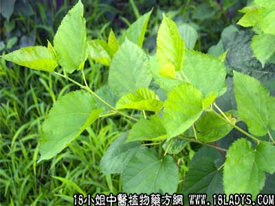

植物名：桑。
生长环境：本品为落叶灌木或小乔木，喜生于较潮湿肥沃土壤上。
分布：我国中部和北部都有，广东以中部栽种较多。
入药部分：老茎、枝、皮、叶、果、寄生及桑虫亦可入药用。
采集期：全年。
自采地点：家种。
性味：性凉、味淡涩。
功能：去骨火、退热、清肝、明目。
主治、用量和用法：1、风湿骨痛：过江龙1两、东风桔1两、桑枝2两、枸杞头1两、水五碗，煎成一碗服；2、湿火，配伍用。
验方：（治湿火骨痛、脚痛、关节痛方）老桑枝2两、白茅根1两、石螺1斤、清水六碗，煎成一碗半服。
（方解）湿火乃因湿火热而成。本方白茅根甘寒能除伏热；老桑枝、石螺去郁湿之火，通利关节。湿去热除，骨痛自止。
（方歌）湿火筋骨关节疼，老桑枝与白茅根，石螺同煲须带壳，除湿去热本方珍。
附录：（果）明目益肾养颜：每次用5钱至1两，煲水作茶饮。（果即桑椹）。
（叶）凉血解热、治眼热：桑叶1两、白豆1两、水四碗，煎成一碗服。
（皮）清肝肺热、利水、去湿、消肿。
（寄生）妇人安胎、产后口渴作茶饮。
（桑虫）治麻痘毒：每次用一条，捣烂，加盐少许，冲滚水热服。
参考资料：《广州市中医验方选集第一集》治风湿骨痛验方：老桑枝1斤、白酒1斤，先以老桑枝在锅上炒至干脆，以酒徐徐洒之，洒完为度。乃以清水十五碗，煎至四碗，分二天服完。几天后则渐轻松全愈，屡效。
《中医验方汇编第一集》治高血压验方：桑树的主根3钱，水煎当茶，饮后脑子清爽，血压降低，无不良反应。
《中医验方汇编第二集》治鹅口疮验方：鲜桑珠粗枝1条，在一头上挖一个槽，将明矾一块放在里面，在火上煅烧成枯矾，研成细末，撒敷在患处。